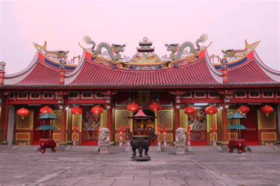
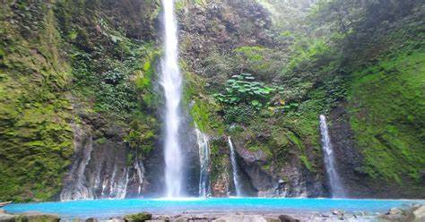
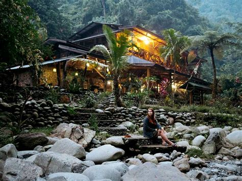

Vihara Gunung Timur
terdapat Kelenteng Tionghoa. Kelenteng ini dibangun pada 1930-an terletak di Jalan Hang Tuah, di sisi Sungai Babura sekitar 500 meter dari Kuil Sri Mariamman.
 vihara.jpgAir Terjun Telaga Dwi Warna Sibolangit
Air Terjun Sibolangit kalian akan disuguhkan oleh pemandangan yang indah dari air terjun yang mempunyai dua warna ini, yaitu biru untuk air dingin dan putih untuk air hangat.
 air terjun.jpgBukit Lawang
Tempat ini memiliki banyak pesona alam, mulai dari flora dan faunanya.
 bukit lawang.jpg